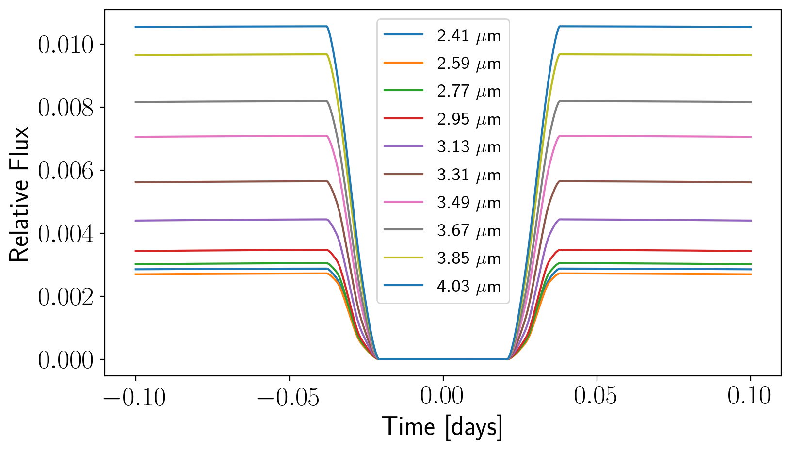

Generate Synthetic Lightcurves for Input¶
[15]:
%matplotlib inline
%config InlineBackend.figure_format = "retina"
# Import functions
import numpy as np
import matplotlib.pyplot as plt
import healpy as hp
import os
import eigenspectra
from eigenspectra import gen_lightcurves, plot_utils
[20]:
# Use prettier plot defaults
plot_utils.plot_setup()
[21]:
# Get wavelength-dependent healpix map
lamhr, spaxels = gen_lightcurves.prep_spectral_hotspot_map(Nside=16)
# Let's inspect the shapes of these two arrays
lamhr.shape, spaxels.shape
[21]:
((417,), (3072, 417))
[22]:
fig, ax = plt.subplots(figsize = (8,4))
ax.set_xlabel("Wavelength ($\mu$m)")
ax.set_ylabel("Eclipse Depth $(F_p / F_s)$")
ax.plot(lamhr, spaxels.T[:,0]); # Arbitrary 1st index
ax.plot(lamhr, spaxels.T[:,927]); # Arbitrary 2nd index

[23]:
# Define observed wavelength grid properties
lammin1 = 2.41
lammax1 = 3.98
dlam1 = 0.18
# Construct wavelength grid
lamlo, dlamlo = gen_lightcurves.construct_lam(lammin1, lammax1, dlam=dlam1)
Nlamlo = len(lamlo)
# Set HealPy pixel numbers
Npix = spaxels.shape[0]
# Define empty 2d array for spaxels
spec2d = np.zeros((Npix, Nlamlo))
# Loop over pixels filling with spectra
for i in range(Npix):
# Degrade the spectra to lower resolution
spec2d[i,:] = gen_lightcurves.downbin_spec(spaxels[i, :], lamhr, lamlo, dlam = dlamlo)
# Let's just make a crude plot of our map
waveInd = 0
x = hp.cartview(spec2d[:,waveInd], title="", cbar=False, cmap=plt.cm.Reds, lonra=[-180,180], latra=[-90,90], notext=False,
return_projected_map = True)
Use starry to make eclipse lightcurves¶
[24]:
# Generate the multi-wavelength eclipse lightcurves using starry
time, lam, dlam, lcurves = gen_lightcurves.create_lightcurves_with_starry(lamhr, spaxels,
save_output=True,
save_tag="example1",
plot_lightcurves = False,
plot_diagnostic = False,
plot_points_on_map_spec=False)
Saved file with tag = 'example1'
[30]:
# Plot the lightcurves
fig, ax = plt.subplots(1, figsize=(10, 5))
ax.set_xlabel('Time [days]')
ax.set_ylabel('Relative Flux')
for i in range(Nlamlo):
# Subtract off minimum (which is the bottom of the eclipse) to look
# like traditional form
lc = lcurves[:,i] - np.min(lcurves[:,i])
ax.plot(time, lc, c = "C%i" %(i%9), label = r"%.2f $\mu$m" %(lamlo[i]))
ax.legend(ncol = 1, fontsize = 14);

[26]:
# Create a custom color map to visually connect map and spectra
cm = plot_utils.create_linear_colormap(c1 = "deepskyblue", c2 = "orange")
# Specify exact viewing geometry
extent=(np.max(time)-np.min(time))/2.21857567+180./360.
data_extent = (-180, 180, -90, 90)
full_extent = np.array([-extent/2.*360.,extent/2.*360.,-90.,90.])
# Create figure
fig, ax = plt.subplots(2,1, figsize = (6, 12), gridspec_kw={"hspace" : 0.25})
# Upper panel
ax[0].imshow(x, origin="lower", extent = data_extent, cmap=cm, aspect="equal")
ax[0].set_ylabel("Latitude ($^{\circ}$)")
ax[0].set_xlabel("Longitude ($^{\circ}$)")
ax[0].set_xlim(full_extent[0], full_extent[1])
ax[0].set_ylim(full_extent[2], full_extent[3])
ax[0].set_yticks([-90, -60, -30, 0, 30, 60, 90])
ax[0].set_xticks([-90, -60, -30, 0, 30, 60, 90])
# Lower panel
ax[1].set_xlabel("Wavelength ($\mu$m)")
ax[1].set_ylabel("Secondary Eclipse Depth $(F_p / F_s)$")
ax[1].plot(lamhr, spaxels[imin,:], color = "deepskyblue", alpha = 0.5)
ax[1].plot(lamlo, spec2d[imin,:], "-o", color = "deepskyblue", label="outside hotspot")
ax[1].plot(lamhr, spaxels[imax,:], color = "orange", alpha = 0.5)
ax[1].plot(lamlo, spec2d[imax,:], "-o", color = "orange", label="inside hotspot")
ax[1].legend(framealpha = 0.0);
[ ]: